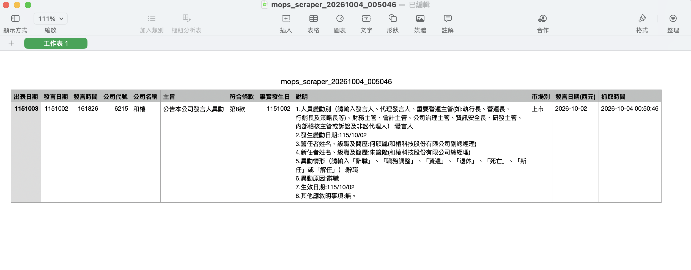

從一個問題，到可自動執行的流程
用 AI（Claude）協助，把手動查詢變成自動定時、輸出 CSV我需要持續追蹤數百家上市櫃公司的「人員變動」重大訊息。
手動逐一查詢既耗時，又容易漏看。
t187ap04_L（上市公司每日重大訊息）# ✗ 寫死資料夾名稱 OUTPUT_DIR = Path.home() / "Desktop" / "project-python-spider-2026" # ✓ 讓程式自己知道「我在哪裡」 BASE_DIR = Path(__file__).resolve().parent OUTPUT_DIR = Path(os.getenv( "OUTPUT_DIR", BASE_DIR))
cd 專案資料夾 python3 -m venv .venv source .venv/bin/activate pip install requests pandas schedule # 常駐，每個交易日 18:00 執行 caffeinate -i python mops_scraper.py # 只執行一次 RUN_FOREVER=0 python mops_scraper.py
| 情況 | 結果 |
|---|---|
| 每次執行 | 新檔 mops_scraper_日期_時間.csv，不覆蓋舊檔 |
| 無符合訊息 | 仍產生檔案，只有欄位標題 |
| API 全部連不上 | 不輸出，log 顯示錯誤 |
| 找不到清單 | 直接停止，避免抓到不相關公司 |

| 主題 | 一開始 | 後來 |
|---|---|---|
| 關鍵字 | 一長串人事詞彙 | 「人員變動」 |
| 輸出 | 累積同一份 CSV | 每次一個新檔 |
| 排程 | 系統排程 | 展示用常駐 |
| 路徑 | 寫死名稱 | 程式所在位置 |